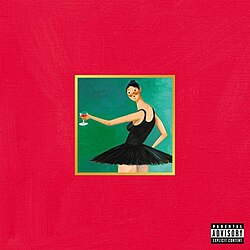
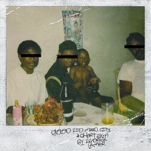
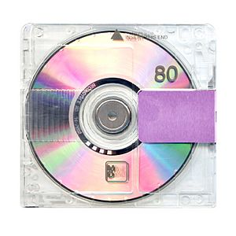

Listas dos Meus Favoritos

(2013) My Beautiful Dark Twisted Fantasy
.jpg)
(2007) Graduation

(2015) To Pimp a Butterfly

(2019) Yandhi
Curiosidades dos Albuns
MBDTF
O "Acampamento do Rap" no HavaíApós a polêmica com Taylor Swift no VMA de 2009, Kanye se isolou nos estúdios Avex em Honolulu, no Havaí. Ele desembolsou mais de 3 milhões de dólares do próprio bolso para financiar o projeto e instituiu regras rígidas para os convidados no estúdio, como a proibição de postar em redes sociais, proibição de fotos e a exigência de usar terno e gravata durante o trabalho.Uma lista de convidados lendáriaKanye reuniu um verdadeiro time de estrelas da música para colaborar no álbum. Nomes como Jay-Z, Rihanna, Nicki Minaj, Bon Iver, Kid Cudi, John Legend, Elton John e Drake passaram pelos estúdios no Havaí. Eles jogavam basquete juntos pela manhã e passavam as madrugadas inteiras criando e gravando.O verso histórico de Nicki MinajA faixa "Monster" traz um dos versos mais icônicos da história do rap, rimado por Nicki Minaj. O impacto foi tão grande que o próprio Kanye West admitiu ter cogitado tirar a música do álbum, com medo de que a performance de Nicki ofuscasse o restante do seu disco.Capas censuradasA identidade visual do álbum foi criada pelo renomado artista contemporâneo George Condo. Ele pintou cinco capas diferentes, incluindo uma que mostrava uma representação abstrata de Kanye sendo abraçado por uma fênix sem roupas. A imagem foi banida por grandes redes de lojas nos EUA, o que forçou o lançamento de versões alternativas com uma tarja pixelada.O curta-metragem "Runaway"Para acompanhar o lançamento, Kanye dirigiu e estrelou um curta-metragem de 35 minutos chamado "Runaway". O filme serve como um videoclipe estendido para várias faixas do álbum e conta a história do romance de um homem com uma fênix que caiu na Terra.
Graduation
A Batalha de Vendas com 50 Cent: O lançamento foi marcado por uma disputa histórica. O rapper 50 Cent desafiou Kanye, dizendo que se o álbum dele (Curtis) vendesse menos que Graduation na primeira semana, ele pararia de lançar álbuns solo. Kanye venceu a disputa vendendo quase 1 milhão de cópias em apenas 7 dias, inaugurando uma nova era onde o hip-hop melódico e experimental superou o "gangsta rap".Visual Assinado por Takashi Murakami: A icônica capa do álbum e o videoclipe de "Good Morning" foram criados pelo famoso artista pop japonês Takashi Murakami. Ele deu vida ao "Dropout Bear" (o ursinho mascote de Kanye) em um estilo visual psicodélico e futurista inspirado em animes.A Inspiração nos Shows de Rock: Para criar o som grandioso do álbum, Kanye se inspirou em grandes bandas de rock como U2 e The Rolling Stones. Ele queria faixas com refrões épicos que pudessem ser cantadas em coro por estádios lotados, o que o levou a usar mais sintetizadores e elementos eletrônicos.O Sample Secreto de "Stronger": Um dos maiores hits do álbum, "Stronger", usa um sample marcante de "Harder, Better, Faster, Stronger" do duo de música eletrônica Daft Punk. Kanye chegou a mixar a música mais de 75 vezes em diferentes estúdios antes de dar o trabalho por concluído, buscando a batida perfeita.O Fim da Trilogia Escolar: Graduation fechou com chave de ouro uma trilogia conceitual focada na temática estudantil. O conceito começou com The College Dropout (2004), passou por Late Registration (2005) e terminou na "formatura" (Graduation), mostrando a evolução do artista de um estudante rebelde a um astro de alcance mundial.
To Pimp a Butterfly
O nome original era outro. Kendrick revelou que o plano inicial era chamar o álbum de Tu Pimp a Caterpillar (Para Cafetinar uma Lagarta). A abreviação seria TU.P.A.C., uma homenagem direta ao lendário rapper Tupac Shakur.Uma entrevista do além. A conversa emocionante entre Kendrick e Tupac na última faixa, "Mortal Man", não é real. Kendrick usou o áudio de uma entrevista raríssima que Tupac deu a uma rádio sueca em 1994 e editou suas próprias perguntas por cima.Visita à África do Sul. O conceito e a sonoridade do álbum mudaram completamente após uma viagem de Kendrick à África do Sul. Visitar locais históricos como a cela de Nelson Mandela em Robben Island o inspirou a abandonar os beats de rap tradicionais e focar no jazz, funk e soul.Aprovação de Prince. Kendrick queria que o lendário cantor Prince participasse da faixa "Complexion (A Zulu Love)". Os dois chegaram a se reunir no estúdio e discutir a música, mas, por falta de tempo na agenda de Prince, a colaboração acabou não acontecendo.O hino de um movimento. A faixa "Alright" se tornou muito maior que o próprio álbum. Com sua mensagem de esperança e resistência, o refrão da música passou a ser cantado por multidões em protestos do movimento Black Lives Matter nos Estados Unidos.
Yandhi
O Sucessor do YeezusO título Yandhi é uma combinação do nome de Kanye com Mahatma Gandhi, seguindo a mesma lógica de Yeezus (Kanye + Jesus) de 2013. O álbum foi planejado originalmente para ser uma sequência espiritual e sonora do aclamado Yeezus.Adiamentos e o Retiro em UgandaO álbum foi anunciado em setembro de 2018 com lançamento previsto para o mesmo mês. Após ser adiado para novembro, Kanye viajou com sua equipe para a Uganda, na África, para terminar as gravações em um estúdio montado no meio da natureza. Mesmo com a imersão, o álbum foi adiado indefinidamente logo em seguida.Participações de PesoO projeto contaria com um elenco de estrelas impressionante. Entre os artistas confirmados e que apareceram nas versões vazadas estão Nicki Minaj, Ty Dolla $ign, Ant Clemons, XXXTentacion, Kid Cudi, Young Thug, Lil Wayne e até o comediante Chris Rock.Da Ocultação à Salvação: O "Jesus Is King"O motivo do cancelamento foi uma mudança radical na vida pessoal e espiritual de Kanye West. Ele formou o coral gospel Sunday Service e decidiu que não faria mais músicas seculares. O Yandhi foi totalmente reformulado, teve suas letras explícitas limpas e se transformou no álbum gospel Jesus Is King, lançado em outubro de 2019.O Legado dos VazamentosMesmo nunca tendo sido lançado oficialmente, quase todas as faixas do Yandhi vazaram na internet em alta qualidade. Músicas como New Body, Alien e Law of Attraction acumulam milhões de reproduções ilegais em plataformas de streaming e no YouTube, sendo considerado por muitos fãs um dos melhores trabalhos da carreira do artista.